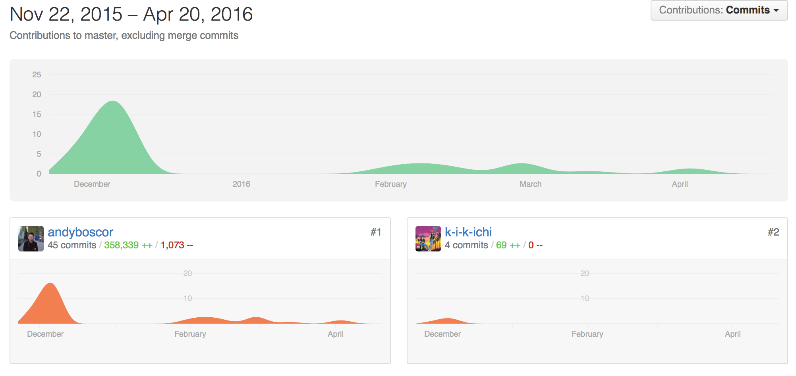

Progress
Tools used, Project Management, Bi-weekly reports, Plans for PoC in Term 2
Tools used
Communication tools
- Facebook Messenger was our preferrd choice of comunication within the team as it is a small team of two and it is available cross-platform.
- Email was our main client and Teaching Assistant communication tool.
- We also used Skype to talk to our client when we left for the holidays.
File sharing tools
- Github
- Google Docs for Documentation
Design Tools
- Microsoft One Note was used for sketches of application on a Surface Pro 3 (with pen)
- Photoshop was used for Mock-ups
- Creately was used for Database and Main Design schema
Group Management Tools
- We used Wunderlist to better split tasks between the team members.
Project Management
In order to create the PoC and create a functioning app, we set up weekly meetings with our client and Skype meetings with the iNRIC content mananger.
Furthermore, we used a Gantt Chart to establish deadlines.

Work packages
Andy Boscor
- Front-end Design ( Mock-ups and Prototype)
- Front-end of app coded in HTML5, CSS3, Javascript (jQuery)
- Implementation of Back-end with Front-end (Javascript functions to automatically inject HTML code from AJAX request scripts)
- Revamp of most AJAX requests
- Login/Logout script
- Local Testing of App on multiple devices with Phonegap Developer App ( Android and iOS)
- Conducted A/B Testing
- Maintained client communication
- Built and tested app on Android with Phonegap Build natively
- Built and tested iOS app in Xcode emulator
- Conducted Loadster stress test for AJAX requests
- Conducted Testmunk install test on multiple Android devices to ensure proper installation
- Added notifications with PushWoosh (Not fully working)
- Biweekly reports
- Presentations + Poster ( UCL and Global Health Event )
- Wrote all documentation
- Created team video
Do Xuan Bach
- Set up Drupal RESTful API with Services Module
- Added Login, Logout and My Account Pages to main iNRIC website
- Tested API endpoints with POSTMAN
- Wrote AJAX scripts
- Added user profile preferences to main website ( not working )
Github commits Term 1

Bi-weekly reports
Meeting minutes included in Bi-weekly reports
Examples/Trials made
Referenced Materials
Image References
- https://ui8.s3.amazonaws.com/uploads/retina_thumbnail_1427391657121.png
- http://cdn0.dailydot.com/uploaded/images/original/2015/4/15/UberX.png
- https://en.wikipedia.org/wiki/World_Health_Organization#/media/File:Flag_of_WHO.svg
- http://iaqadvisoronline.com/wp-content/uploads/2014/12/Logo-World-Health-Organization.png
- https://upload.wikimedia.org/wikipedia/en/thumb/5/5d/ECDC_logo.svg/384px-ECDC_logo.svg.png
- http://dynamicobjx.com/wp-content/uploads/2014/07/html5-css.png
- http://phonegap.com/uploads/artwork/Phonegap-Logo.png
- http://drupalversity.com.ng/sites/default/files/drupal.png
- http://www.themespad.com/wp-content/uploads/2014/07/jquery-tutorials.png